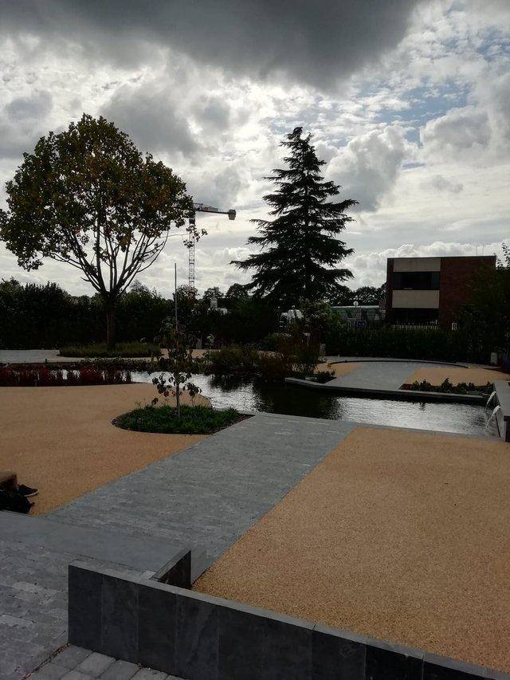

Mijn portfolio
Wie ben ik?
Mijn 3 sterke punten
- Zelfstandig te werk gaan
- In een team werken
- Efficïent te werk gaan
Mijn 3 zwakke punten
- Soms wil ik te snel zijn
- Ik geraak soms rap verstrooid
- Rap afgeleid
Mijn favoriete foto

Aangelegde tuin te Thomas More.